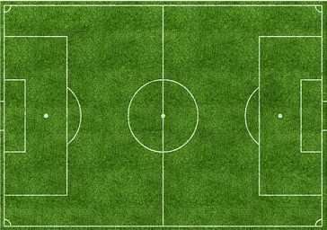

Задание 1
Задание 2
Задание 3


Задание 5
-
"JavaScript for kids: A Playful introduction to Programming" by Nick
Morgan
-
"Eloquent JavaScript: A Modern introduction to Programming"
- "JavaScript: The Good Parts" by Douglas Crockford
-
"Programming JavaScript Application: Robust Web Architecture with
Node,HTML5,and Moderns JS Libraries" by Eric Elliott
-
"Effective JavaScript: 68 Specific Ways to Harness the Power of
JavaScript" by David Herman
- "JavaScript: The definitive Guide" by David Flangan
- "You Don't Know JS" by Kyle Simpson